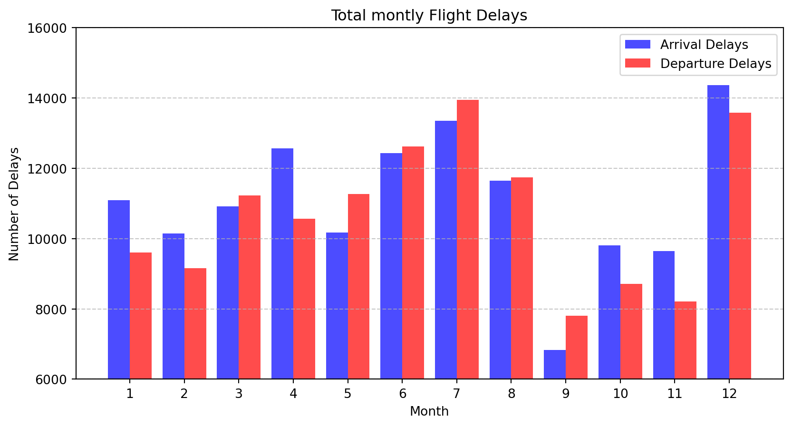

import pandas as pdimport numpy as npimport matplotlib.pyplot as plt# X 축 위치 조정[동시에 출발·도착 지연 표기 위해]x = np.array(monthly_delays['month']) # 월 (1~12)나열width =0.4# 막대 너비# 그래프 그리기 (도착 지연은 왼쪽, 출발 지연은 오른쪽)plt.figure(figsize=(10, 5))plt.bar(x - width/2, monthly_delays['arrival_delays'], width=width, label='Arrival Delays', color='blue', alpha=0.7)plt.bar(x + width/2, monthly_delays['departure_delays'], width=width, label='Departure Delays', color='red', alpha=0.7)plt.ticklabel_format(style='plain', axis='y')plt.ylim(6000, 16000)plt.xlabel('Month')plt.ylabel('Number of Delays')plt.title('Total montly Flight Delays')plt.xticks(ticks=range(1, 13)) # 1~12월 표시plt.legend()plt.grid(axis='y', linestyle='--', alpha=0.7)plt.show()

지연횟수가 가장 많은 달 : 12월
지연횟수가 많은 구간=6~8월
뉴욕공항의 지연은 12월과 여름철(6~8월)에 가장 빈번
4-2 지연 출발·도착과 날씨의 관계
월별 지연 횟수와 기상 요인
[온도, 풍속, 습도]의 상관관계 분석
Code
# flights, weather 두 데이터 프레임 merge 후 사용할 컬럼만 picked2 로 변환[온도, 풍속, 습도]#weather데이터 확인 weather.info()merged=pd.merge(flights, weather, how='inner')picked2=merged[['temp','wind_speed','humid','time_hour']]#picked2['time_hour']의 형식 변환 [object에서datetime64로 ]picked2['time_hour'] = pd.to_datetime(picked2['time_hour'])# 월정보 추출picked2['month'] = picked2['time_hour'].dt.month#월별 평균 기온, 풍속, 습도 측정weather_inf=picked2.groupby('month')[['temp','wind_speed','humid']].mean(numeric_only=True).reset_index()# 섭씨로 변환def celsius(fahrenheit):return (fahrenheit -32) *5/9weather_inf['temp'] = weather_inf['temp'].apply(celsius)print(weather_inf)